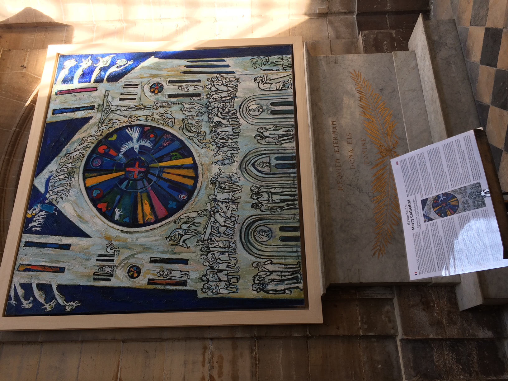
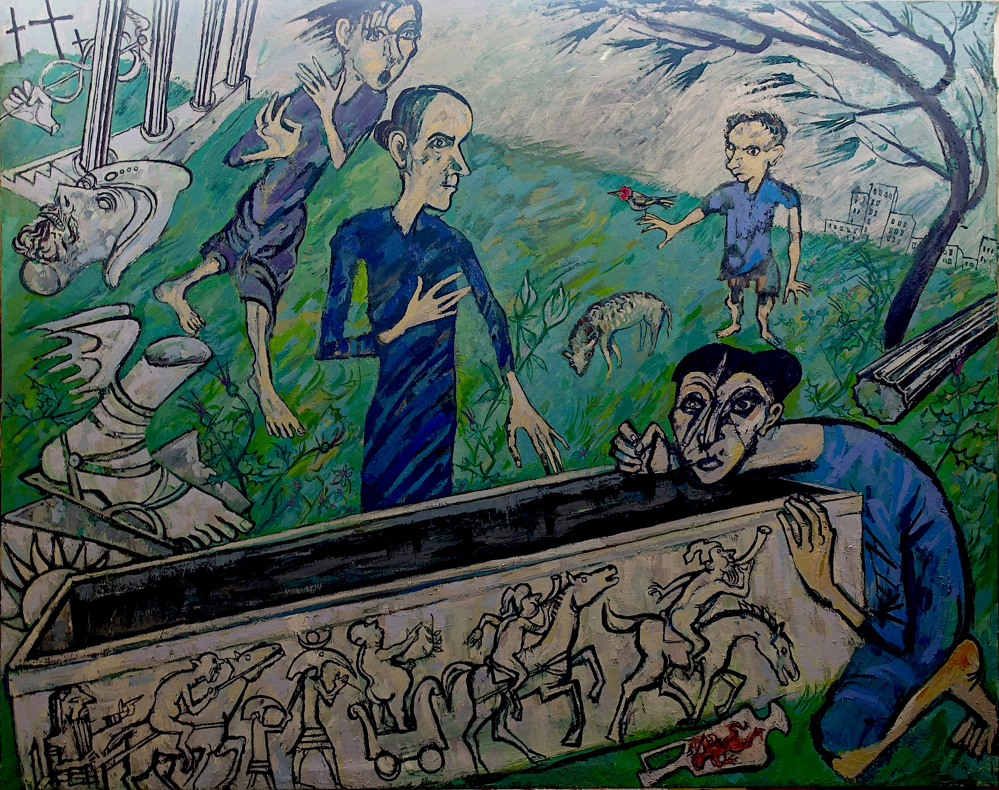
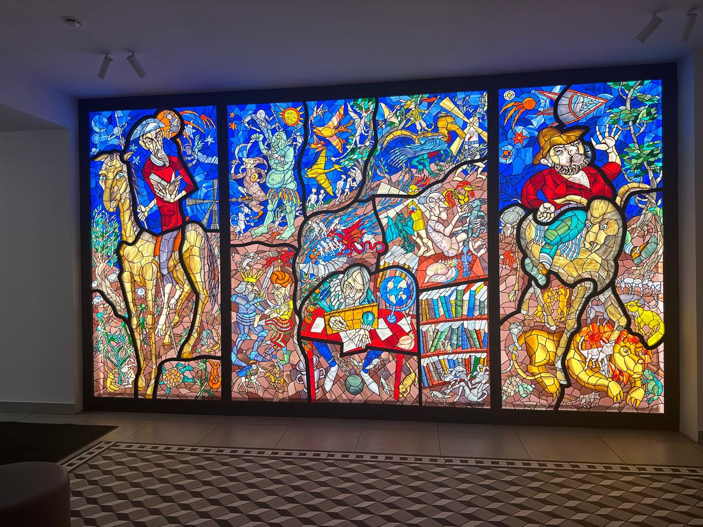
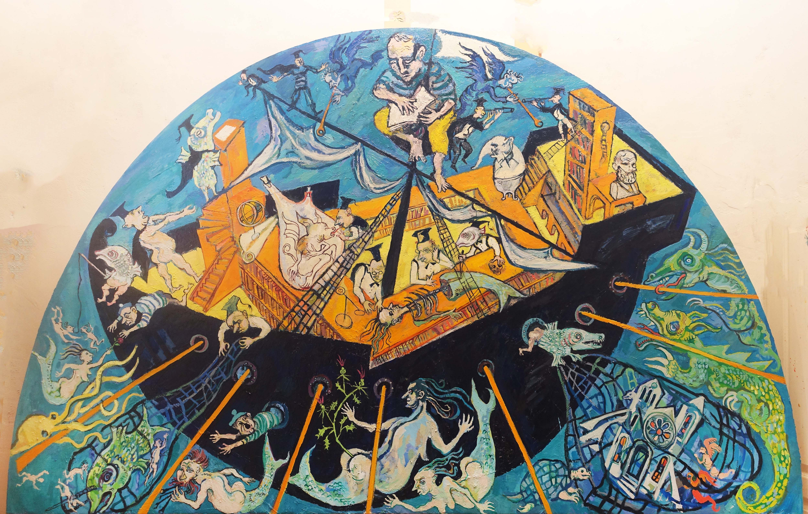
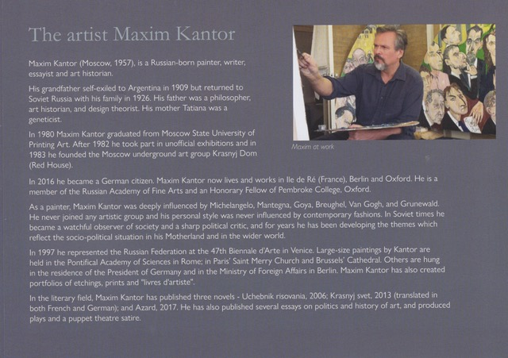
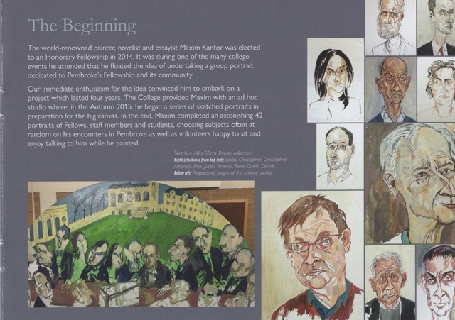
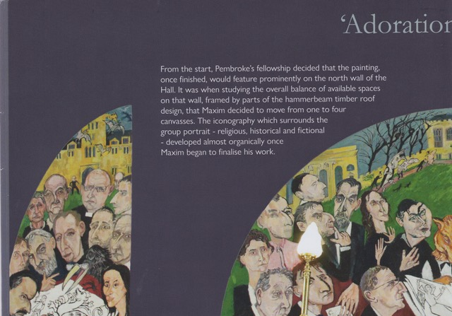
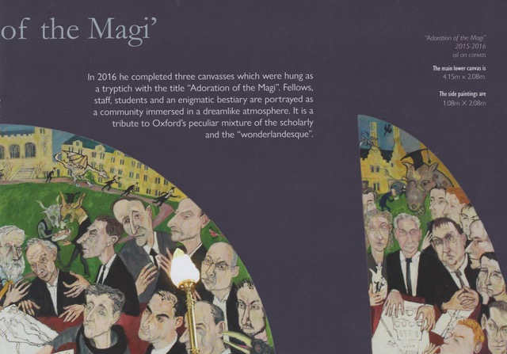
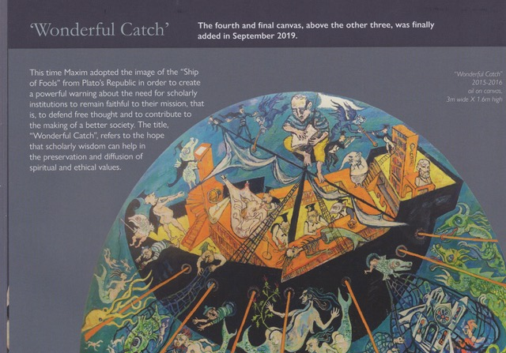
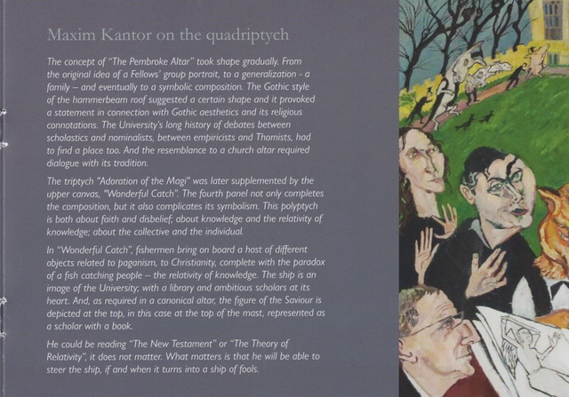

Permanent installations and collections worldwide
Two monumental works permanently installed at the Pontifical Academy of Sciences within the Vatican.
Two monumental paintings permanently installed in the historic Genscher Saal of the Bundestag.
Works held in the permanent collections of the State Russian Museum (St. Petersburg) and the State Tretyakov Gallery (Moscow).
Works by Maxim Kantor are held in major private and institutional collections across Europe and North America.
Paintings installed in the historic Church of Saint-Merry in the Marais district, Paris.

Two monumental canvases permanently installed in the Genscher Saal of the German Ministry of Foreign Affairs.
A cycle of paintings created for the Chapel of Resurrection at the Luxembourg School of Religion & Society.

Stained glass window depicting Don Quixote, 2024.

Altarpiece and paintings permanently installed at Pembroke College, University of Oxford.






